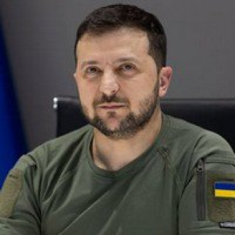
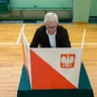

Досьє

Зеленський Володимир Олександрович
6-й Президент України
Місце народження
Народився 25 січня 1978 року в місті Кривий Ріг Дніпропетровської області.
Освіта
У 1995-2000 рр. навчався у Київському національному економічному університеті за спеціальністю «Правознавство», здобув кваліфікацію
Кар'єра
1997-2003 рр. – актор, сценарист, художній керівник команди Клубу веселих і кмітливих «Квартал 95».
2003-2011 рр. – художній керівник у товаристві з обмеженою відповідальністю «Студія «Квартал 95».
2011-2012 рр. – генеральний продюсер у приватному акціонерному товаристві «Телеканал «Інтер».
2013-2019 рр. – художній керівник у товаристві з обмеженою відповідальністю «Студія «Квартал 95».
Засновник ГО «Молодіжний центр «Ліга сміху». На виборних посадах не перебував.
У творчому доробку має 10 повнометражних ігрових фільмів. Володар понад 30 нагород Національної телевізійної премії України «Телетріумф». Є також володарем премій і лауреатом багатьох міжнародних кіно-, телефестивалів і медіафорумів.
Зіграв головну роль у серіалі «Слуга народу», який став лауреатом міжнародної кінопремії WorldFest Remi Award (США, 2016) та потрапив до четвірки фіналістів у категорії комедійних фільмів на Seoul International Drama Awards (Південна Корея). Також «Слуга народу» був удостоєний нагороди Intermedia Globe SILVER у категорії «Розважальні телевізійні серіали» на міжнародному фестивалі медіаконтенту WorldMediaFestival у Гамбурзі (Німеччина).
Від самого початку бойових дій на Донбасі разом зі студією «Квартал 95» допомагав армії. Актори передавали бійцям кошти, техніку, відвідували з концертами передову та різні військові частини.
Політична кар'єра
21 квітня 2019 року був обраний Президентом України на чергових виборах, здобувши підтримку 73,22% виборців. 20 травня склав присягу перед народом України як Глава держави.
Безпартійний. Судимості, не погашеної та не знятої в установленому законом порядку, не має.
Воєнний стан та війна з Росією
24 лютого 2022 року, о 5 ранку, путін заявив про початок наступу на Україну, а Верховна Рада України ввела воєнний стан. Законопроєкт відразу був підписаний президентом Зеленським. Воєнний стан було запроваджено строком на 30 днів. Того ж дня Україна розірвала дипломатичні відносини з Росією.
Під час наступу російських військ на Київ у ніч з 25 на 26 лютого 2022 року, Володимир Зеленський відмовився від пропозиції США евакуювати його зі столиці. Він підтвердив відеозаписом перед Офісом президента, що разом з іншими високопосадовцями перебуває у Києві.
27 лютого президент Зеленський підкреслив, що дії РФ проти України мають ознаки геноциду та закликав виключити Росію з ООН. Він відзначив, що дії Росії тягнуть на міжнародний трибунал.
28 лютого президент підписав заявку на членство України в ЄС.
4 березня 2022 року президент жорстко розкритикував відмову країн-членів НАТО запровадити безпольотну зону в небі над Україною і завив, що Північноатлантичний альянс також нестиме відповідальність за загибель українців. Разом з тим він подякував друзям України серед країн-членів НАТО, які, попри позицію Альянсу загалом, продовжують стояти пліч-о-пліч з Україною та допомагати у відсічі ворога.
20 березня РНБО призупинило діяльність партій, які мають зв'язки з РФ. Мова йде про «Опозиційну платформу — За Життя», «Партія Шарія», «Наші», «Опозиційний Блок», «Соціалістична партія України», «Соціалісти», «Прогресивна соціалістична партія України» та інші. Того ж дня президент Зеленський ввів у дію рішення РНБО про тимчасове призупинення проросійських партій[153]. 31 березня президент назвав війну з Росією «вітчизняною».
22 серпня заявив, що Україна відмовиться від будь-яких переговорів з Росією, якщо відбудеться показовий суд над захисниками «Азовсталі».
21 грудня 2022 року здійснив перший візит за кордон з початку повномасштабної війни.
Визнання
Найвпливовіший єврей світу (2022) за версією ізраїльського видання Джерусалем пост.
Людина року (2022) за версією Файненшл таймс.
Людина року (2022) за версією Тайм.
Найвпливовіша людинина Європи (2022), за версією Politico.
Людина року (2022) за версією журналу Profil.
7 березня 2022 отримав Премію свободи імені Рональда Рейгана за «За його мужню боротьбу з тиранією та за його незламну позицію щодо свободи та демократії». 26 липня 2022 прем'єр-міністр Великої Британії Борис Джонсон вручив Зеленському премію лідерства імені Черчілля «за неймовірну мужність, опір і гідність перед обличчям варварського вторгнення Путіна». 28 липня 2022 був нагороджений найвищою нагородою Литви — орденом Вітовта Великого.
Сімейний стан
Одружений. Дружина – Олена Володимирівна Зеленська. Має дочку Олександру та сина Кирила.
20.01.2023
Матеріали по темі

Кримінал
Після теракту в Москві Берлін і Лондон попереджає: жертв в Росії буде більше
Кримінал
Після теракту в Москві Берлін і Лондон попереджає: жертв в Росії буде більше
Кримінал
Після теракту в Москві Берлін і Лондон попереджає: жертв в Росії буде більше
Кримінал
Після теракту в Москві Берлін і Лондон попереджає: жертв в Росії буде більше
Кримінал
Після теракту в Москві Берлін і Лондон попереджає: жертв в Росії буде більше
Кримінал
Після теракту в Москві Берлін і Лондон попереджає: жертв в Росії буде більше
Кримінал
Після теракту в Москві Берлін і Лондон попереджає: жертв в Росії буде більше
Кримінал
Після теракту в Москві Берлін і Лондон попереджає: жертв в Росії буде більше